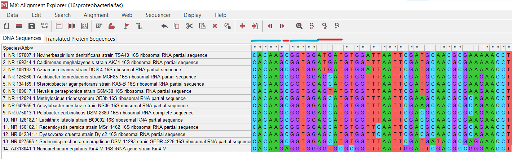
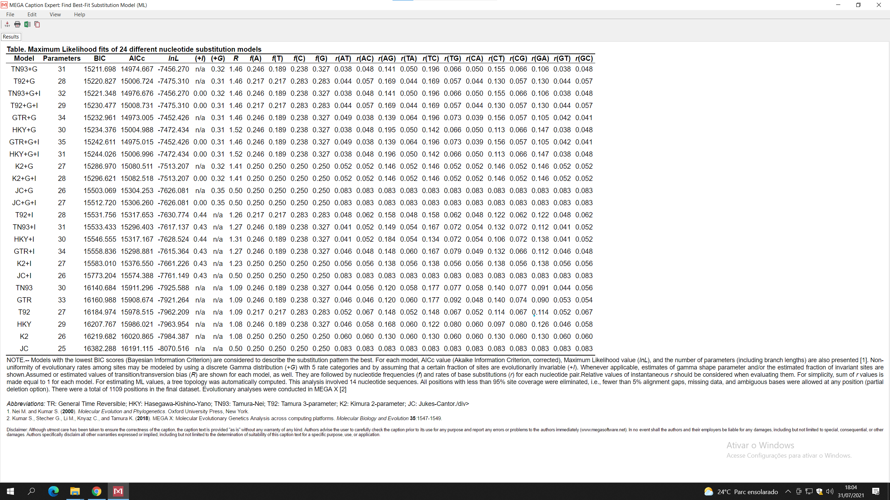

Inferência Filogenética com MegaX
Observações Iniciais
Este é um tutorial prático, com o intuito de mostrar como fazer, de maneira rápida, uma inferência filogenética usando o programa Mega versão X. Esse programa funciona em Windows, Mac e Linux e possui ferramentas para as principais etapas da construção de uma árvore filogenética, como alinhamento, escolha de modelo e a inferência filogenética em si. Além disso, ele é usado em diversos artigos científicos. Entretanto, vale ressaltar que existem outros métodos de alinhamento com maior acurácia e que não são encontrados no MegaX, como o Clustal Omega e o T-Coffee. Além disso, o MegaX não possui o método de inferência bayesiana, que é um método de probabilidade assim como o "Maximum Likelihood", sendo este encontrado no MegaX e o método escolhido para este tutorial. Por fim, para inferência filogenética recomenda-se utilizar sequências homólogas.
Abrindo os dados no MegaX
Com o programa aberto, clique na opção "File" no menu do topo do programa e, depois, clique em "Open A File/Session...". Aparecerá uma janela para que você selecione o arquivo. Utilizaremos, neste tutorial, um arquivo "fasta" contendo o gene para a subunidade 16s de bactérias e de uma arquea que fará parte do grupo externo, ambos obtidos no Genbank. Após selecionar os dados, o programa deve mostrar as sequências de forma semelhante à imagem a seguir:
Alinhando as sequências
Repare na região ao topo, circulada em azul, que contém os dois métodos de alinhamento disponíveis: Clustal W e Muscle. Nesse tutorial utilizaremos o alinhamento Muscle. Clique nele para fazer o alinhamento e aperte "OK" nas próxiams janelas. Elas possuem opções de configuração, como penalidade de "gaps", mas utilizaremos a configuração padrão. Vale ressaltar que a penalidade para os "gaps" não possui nenhum significado matemático ou biológico e, comumente, a configuração padrão é a que o autor encontrou melhores resultados. Após alinhado, as sequências devem ficar parecidas com a próxima imagem.
Regiões do alinhamento
Com as sequências alinhadas, é possível perceber algumas regiões com asteriscos em cima, como as marcadas em azul na imagem acima. Essas são regiões conservadas, que não possuem bases nitrogenadas diferentes entre as sequências. Já as regiões sem asteriscos, como as marcadas em vermelho na imagem acima, apresentam diferenças de bases nitrogenadas entre as sequências e são chamadas de regiões sinais, pois elas possuem os sinais filogenéticos. Vale ressaltar, também, que pode haver algumas regiões, geralmente com longos "gaps", que possuem baixa acurácia quanto ao alinhamento. Essas regiões são denominada regiões de ruído. Para a sua detecção, é comum o uso de programas que utilizam múltiplos alinhamentos, por exemplo, usando método de "bootstrap", mas isso não será abordado neste tutorial.
Iniciando as análises filogenéticas
Após o alinhamento, clique em Data, no menu de cima do programa. Depois clique em Phylogenetic Analysis, conforme a figura abaixo. Aparecerá uma janela perguntando se as sequências são codificadoras de proteínas. No caso deste tutorial, não são. Note que as informações do alinhamento são enviadas para a outra janela do programa, onde serão serão feitos os demais passos.
Escolhendo o melhor modelo evolutivo
O MegaX possui diversas ferramentas, mas apenas apenas algumas, importantes para a inferência filogenética, serão abordadas aqui. Um parâmetro muito importante para a inferência filogenética é o modelo evolutivo. A escolha do melhor modelo evolutivo para determinado conjunto de dados pode ser feita com ajuda de testes estatísticos. Para fazer esses testes, clique "Models", circulado em azul na imagem abaixo. Clique em "Find Best DNA/Protein Models (ML)...". Aparecerá uma janela com alguns parâmetros. Deixe a configuração padrão e note que o programa possui, para os métodos usados, a opção "Gaps/Missing Data Treatment" para possíveis remoções parciais ou totais dos gaps. Isso é comumente usado para remover as regiões de ruído.
Critério de Informação de Akaike (AIC) e Critério de Informação Bayesiano (BIC)
O MegaX realiza alguns testes estatísticos e disponibiliza, de cima para baixo, os melhores modelos evolutivos para o conjunto de dados. Vale ressaltar que, embora modelos mais complexos expliquem mais condições diversas que os dados possam ter, recomenda-se utilizar modelos mais simples que atendam ao conjunto de dados utilizados. Note, na imagem abaixo, que, na região debaixo, há uma legenda para os modelos, bem como uma explicação de quais testes foram utilizados. Note, também, que o modelo escolhido será o "Tamura-Nei" mais "Gamma Distribution".
Filogenia
Clique na opção "Phylogeny", no menu do programa. Aparecerá algumas opções de métodos de distância, parsimônia e probabilidade. Será utilizado, aqui, o método "Maximum Likelihood", que é um método de probabilidade. Clique em Construct/Test Maximum Likelihoog Tree... e, depois, confirme o uso dos dados.
Selecionando as opções
Uma janela com diversas opções, como a da imagem abaixo, aparecerá. Não será falado, aqui, sobre todas elas. Porém, é recomendado que se utilize teste de filogenia, como o bootstrap. Esse método faz múltiplas inferências filogenéticas com pequenas alterações na amostra, como excluir um sítio ou uma região e duplicar outro sítio ou outra região. Na opção "Test of Phylogeny", selecione "Bootstrap Method".. O número de replicações pode ser escolhido entre 50 a 10000, mas é comum encontrar trabalhos com valores de 500 ou de 1000 pra cima. Será utilizado, aqui, o valor de 1000 replicações. Mais abaixo, em "Model/Method", é possível selecionar o modelo evolutivo desejado. Será utilizado, aqui, o modelo "Tamura-Nei". Além disso, será selecionado em "Rates among Sites" a opção "Gamma Distributed", conforme o modelo que obteve maior desempenho nos testes feitos anteriormente.
Note que há outras opções que possam ser interessantes, dependendo dos dados utilizados, como a escolha de deletar parte das regiões de gaps, deletar todas as regiões de gaps ou não deletar. Além disso, é possível escolher outras opções de método heurístico e de filtro de troca de ramo. Essas opções podem aumentar ou diminuir a acurácia, assim como o tempo de execução. Será utilizado, aqui, a configuração padrão para essas opções.
Observação: antes de inicar o processo, tenha em mente que o método de inferência estatística utilizado, aqui, requer muito processamento e tende a ser demorado em conjuntos grandes de dados. Para esses casos, recomenda-se a utilização de um método de distância como o "Neighbor joining".
Resultado final
Após terminar a execução, aparecerá uma nova janela com uma árvore semelhante a da imagem abaixo. Note, na imagem, que o grupo externo utilizado aqui é composto pelo 16s da bactéria Sediminispirochaeta smaragdinae, do filo Spirochaetes, e pelo 16 da arquea Nanoarchaeum equitans. Os demais OTUs (Operational taxonomic unit) são de 16s de bactérias do filo Proteobacteria.
Observe que os agrupamentos formados, em alguns casos, correspondem à classe, órdem e família dessas bactérias. Note, na imagem abaixo, que a opção destacada em azul possibilita mudar a raíz da árvore. Além disso, os valores representados na árvore corrrespondem ao valor de bootstrap, sendo que um deles está marcado em vermelho, pois é um valor mais baixo. Para alguns autores, valores abaixo de 70 indicam uma possível polítomia. Na opção do menu destacado em verde, é possível criar essas politomias a partir de um valor desejado.
Por fim, embaixo da janela há uma região, marcada em amarelo, que descreve as técnicas utilizadas para a inferência filogenética, bem como as citações para essas ferramentas.